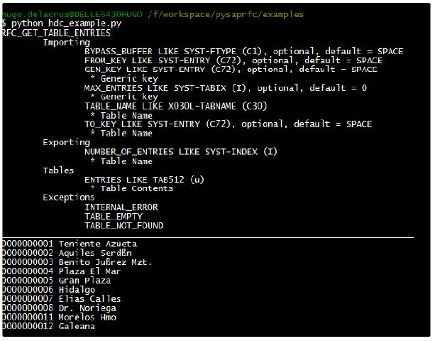

Pysap Python Library for SAP RFCs
Posted on October 31, 2014
Pysap is a python module created to call SAP RFCs, it was created by Klavdij Voncina.
You can download this Python module from SourceForge.
This is an example of the use of this python module:
# This example shows how to perform remote function calls
import pysap
# Set configuration file (contains server, mandant, user, password, etc)
sap_conn = pysap.Rfc_connection(conn_file='sapconn.ini')
# Open connection
sap_conn.open()
# Get RFC definition
func = sap_conn.get_interface('RFC_GET_TABLE_ENTRIES')
# Print its description
print func.desc
# Fill the needed arguments
func['TABLE_NAME'] = 'KNA1'
func['MAX_ENTRIES'] = 10
# Perform function calls
try:
rc = func('TABLE_NAME', 'MAX_ENTRIES', 'ENTRIES') # Only the arguments specified here will be passed to the RFC,
# for example, if you omit MAX_ENTRIES, the RFC will return ALL the entries
# Also you have to define the returning fields, in this case the table ENTRIES
except pysap.SapRfcError, desc:
print 'Error invoking: %s' % desc
itab = sap_conn.get_table('KNA1')
itab.append_from_table(func['ENTRIES'])
print '_'*79
for row in itab:
print '%(KUNNR)5s %(NAME1)-30s' % row This python script open a SAP connection, gets the RFC definition and print it on the screen, then fill the parameters and call the RFC, later we define an internal table based on standard table KNA1 to store the RFCs result, then we print each row of the internal table.
For the connection we needed a file called sapconn.ini, this file contains the following lines:
; This is sample .ini files containing connection definitons.
; Modify values to suit your needs.
; Any connection parameter recognized by SAP connection string may be used as key
; To connect to system defined as 'Connection 1' use:
; conn=pysap.Rfc_connection(conn_file='/path/to/this/file',conn_name='Connection 1')
; conn.open()
[DEFAULT]
;Default values shared by all connections
;(unless explicitily overriden)
LCHECK=1
[Connection 1]
; direct connection
ASHOST=192.168.1.16
CLIENT=260
SYSNR=00
USER=HCRUZ
PASSWD=EASYPASSThis is the result:

python pysap
I’ve created very fun things using this library, but that is for another post.